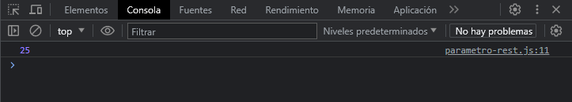
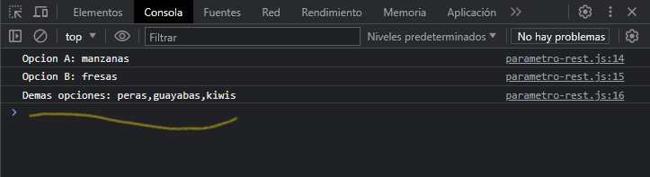

El ultimo parámetro de una función se puede prefijar con ..., lo que hará que todos los argumentos restantes suministrados por el usuario se coloquen dentro de un array de JavaScript estándar.
Solo el ultimo parámetro puede ser un parámetro rest. Veamos un ejemplo de como funciona:
function calcularSuma(...num) {
let total = 0
for (const i of num) {
total += i
}
return total
}
let operacionSuma = calcularSuma(12, 8, 5)
console.log(operacionSuma)
En este ejemplo tenemos una función llamada calcularSuma() que recibe un parámetro llamado "num", le ponemos como prefijo el operador rest indicando que recibirá mas de un parámetro y asi el usuario suministrar mas de un parámetro para calcular sumas. Como la función nos devuelve el total de las sumas lo almacenas en una variable llamada "operacionSuma" y lo mostramos en consola.
Veamos otro ejemplo:
function frutas(opcionA, opcionB, ...opciones) {
console.log(`Opcion A: ${opcionA}`)
console.log(`Opcion B: ${opcionB}`)
console.log(`Demas opciones: ${opciones}`)
}
frutas("manzanas", "fresas", "peras", "guayabas", "kiwis")
En este otro ejemplo recibimos como mínimo dos parámetros "opcionA" & "opcionB", seguido de un parámetro rest el cual indica mas opciones de fruta que podemos definir. Al llamar a la función indicamos las opciones A y B, y si queremos indicar mas opciones las podemos definir ya que eso nos permite el operador rest.
Este es el resultado:
